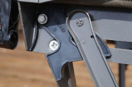
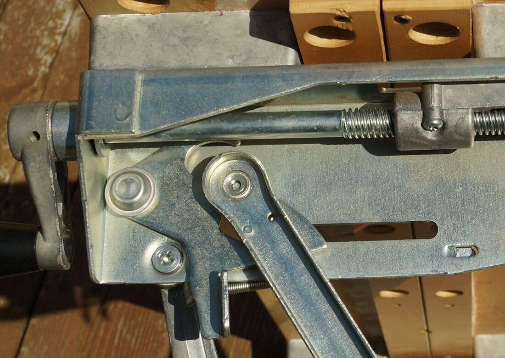
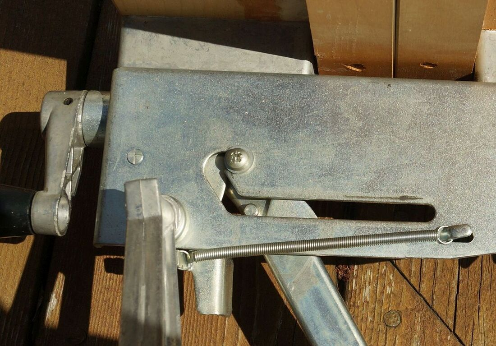

From July 1978 to September 1979 the Workmate 79-001 was made with plastic top-release latch levers, which are prone to break. This includes late Type 4 and all Type 6 versions of the 79-001. Plastic latch levers were also used on the Workmate 79-004 and some production of the Jobmate 3980. No replacement part is available, so owners of a broken one have to figure out how to do a repair. I have the following suggestions:
Workmate 79-001 Plastic Latch Lever Repair

Find a Replacement on eBay
It's rare, but original plastic latch levers have shown up for sale on eBay from sellers who are parting out a Workmate.
Use a Plastic Latch Lever from a Trashed Workmate
If your Workmate with broken lever is in particularly good overall condition, it may be worth it to find a 79-001 Type 6 that is in worse condition to scavenge an unbroken plastic latch lever from. While you're at it, you could probably sell other parts from the donor Workmate on eBay.
Use a Steel Latch Lever from a Trashed Workmate
With a little work, a steel top-release latch lever from a Type 1, 2, 4, 7, or 8 can be used in place of a broken plastic one. The pivot point where the lever mounts to the frame is the same for both styles of lever, so mounting the steel lever shouldn't be hard. The main difference is that the steel lever uses a coil spring hooked from the lever to the frame to hold it in the closed position. The Type 6 upper frame pieces don't have the little metal tab found on the other Types that the coil spring hooks onto. One solution for this would be to drill a hole in the right spot and drive a screw in so that its head provides the attachment point for the spring.
It's rare, but original plastic latch levers have shown up for sale on eBay from sellers who are parting out a Workmate.
Use a Plastic Latch Lever from a Trashed Workmate
If your Workmate with broken lever is in particularly good overall condition, it may be worth it to find a 79-001 Type 6 that is in worse condition to scavenge an unbroken plastic latch lever from. While you're at it, you could probably sell other parts from the donor Workmate on eBay.
Use a Steel Latch Lever from a Trashed Workmate
With a little work, a steel top-release latch lever from a Type 1, 2, 4, 7, or 8 can be used in place of a broken plastic one. The pivot point where the lever mounts to the frame is the same for both styles of lever, so mounting the steel lever shouldn't be hard. The main difference is that the steel lever uses a coil spring hooked from the lever to the frame to hold it in the closed position. The Type 6 upper frame pieces don't have the little metal tab found on the other Types that the coil spring hooks onto. One solution for this would be to drill a hole in the right spot and drive a screw in so that its head provides the attachment point for the spring.


Steel top-release lever


View from the inside of the frame showing the coil spring attachment points
Make a New Metal Latch Lever That Copies the Plastic One
One owner made some very impressive new metal levers based on the plastic ones. He found an old diagram on the web of the plastic lever and scaled it up to size using one of his broken ones. He made a prototype out of Masonite, fine-tuning it until it worked. He was fortunate to have a friend with a plasma cutting table who used the Masonite to cut pieces of 3/16" mild steel to shape.
Once he had the pieces, he found that he had to file and grind it into final shape, which he described as a tedious job. He also cut a couple of notches to create a post or a nub to hold one end of a spring to hold the latch in the locked position. The other end of the spring fits over a second post, formed by a sheet-metal screw coming through from the front of the frame.
The photos below show the piece just after it was cut out, and then two views after it was finished and installed with the sheet-metal screw and spring.
One owner made some very impressive new metal levers based on the plastic ones. He found an old diagram on the web of the plastic lever and scaled it up to size using one of his broken ones. He made a prototype out of Masonite, fine-tuning it until it worked. He was fortunate to have a friend with a plasma cutting table who used the Masonite to cut pieces of 3/16" mild steel to shape.
Once he had the pieces, he found that he had to file and grind it into final shape, which he described as a tedious job. He also cut a couple of notches to create a post or a nub to hold one end of a spring to hold the latch in the locked position. The other end of the spring fits over a second post, formed by a sheet-metal screw coming through from the front of the frame.
The photos below show the piece just after it was cut out, and then two views after it was finished and installed with the sheet-metal screw and spring.


Glue the Latch Lever Back Together
It surprised me but one owner reported success at gluing a latch lever together. This is an option if the only breakage is in the main body of the plastic lever. If the skinny finger that provides the spring action breaks off, it can't be glued. This is how the owner described the repair:
"The lever actually broke into 3 pieces, including the point where you mentioned. I used some epoxy to join the 3 pieces together, and last night I took some more epoxy and filled in the area around the whole piece (see attached pic). It was nice that the part was made with a perimeter ridge, for stiffness I guess. That provided a nice 'well area' that I filled in with the hopes that this additional epoxy thickness will keep the lever rigid enough to use without breaking again."
The photo on the left below shows the three pieces glued together; the photo on the right shows the "well" filled in with epoxy.
It surprised me but one owner reported success at gluing a latch lever together. This is an option if the only breakage is in the main body of the plastic lever. If the skinny finger that provides the spring action breaks off, it can't be glued. This is how the owner described the repair:
"The lever actually broke into 3 pieces, including the point where you mentioned. I used some epoxy to join the 3 pieces together, and last night I took some more epoxy and filled in the area around the whole piece (see attached pic). It was nice that the part was made with a perimeter ridge, for stiffness I guess. That provided a nice 'well area' that I filled in with the hopes that this additional epoxy thickness will keep the lever rigid enough to use without breaking again."
The photo on the left below shows the three pieces glued together; the photo on the right shows the "well" filled in with epoxy.


3D Print a New Plastic Latch Lever
3D printing is used for manufacturing many parts these days, but it seems to be tricky to print one of these levers. The problem explained to me is that on the 3D-printed lever the skinny finger that functions as a torsion spring breaks quite easily in use. It's not clear whether there is a plastic available for 3D printers that is both strong enough and springy enough to make this part. However, I have a .STL file and a .DXF file provided by Workmate owners who have attempted to print it. If you use this and find the right material to make it work, please let me know!
Perhaps the solution is to 3D print a copy of the steel lever used on the other 79-001's. That style of lever does not need to be springy, but it would require mounting a coil spring, as mentioned above. I would certainly be interested in seeing someone try this.
3D printing is used for manufacturing many parts these days, but it seems to be tricky to print one of these levers. The problem explained to me is that on the 3D-printed lever the skinny finger that functions as a torsion spring breaks quite easily in use. It's not clear whether there is a plastic available for 3D printers that is both strong enough and springy enough to make this part. However, I have a .STL file and a .DXF file provided by Workmate owners who have attempted to print it. If you use this and find the right material to make it work, please let me know!
Perhaps the solution is to 3D print a copy of the steel lever used on the other 79-001's. That style of lever does not need to be springy, but it would require mounting a coil spring, as mentioned above. I would certainly be interested in seeing someone try this.
If you have experience repairing a broken plastic latch lever and have success or lack of success to report, let me know through the Contact page.